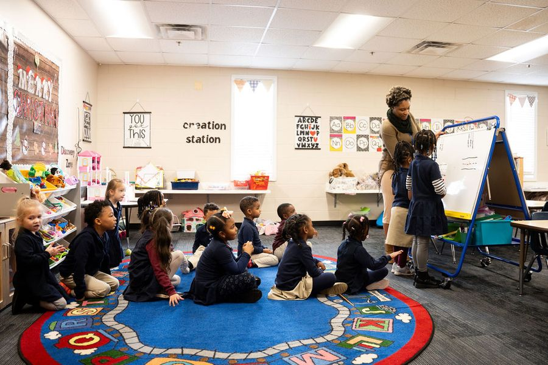

Admissions
Enrollment Information
Independent Baptist Academy is an open-enrollment K-5 through 12th grade academy. You can download our information and enrollment packet.
For more information please email us at iba@ibcministries.org or call us at (301) 856-1616.

Admissions Policy
The church and school shall have a nondiscriminatory policy and, therefore, shall not discriminate against members, applicants, students, and others on the basis of race, color or national or ethnic origin.
Students do not automatically have the right to enroll at IBA. Applications for new student enrollment will be approved at the sole discretion of the school. All new students must meet all the general admission requirements for Independent Baptist Academy before having an interview with the administration. They will be tested prior to grade level placement regardless of whether they are transferring in from a private school, public school, or home schooling. If the student does not meet IBA’s academic standards, the administration has the right to hold a student back a grade or place a student on academic probation.
Students do not automatically have the right to re-enroll at IBA. Applications for re-enrollment will be approved at the sole discretion of the school. Returning students must have successfully passed their previous school year. In order to guarantee acceptance, re-enrolling students must register before the re-enrollment deadline. Re-enrolling students will be given priority enrollment status over new applicants until the re-enrollment deadline.
Both parents of all new students are required to sign IBA’s “Statement of Cooperation” and agree to abide by the policies stated in the Academy Handbook. No student will be admitted or allowed to remain in Independent Baptist Academy whose parents do not agree and cooperate with the overall purpose and program of the school. It is a state requirement to have immunization records on all new and returning students; therefore, an up-to-date immunization record on your child is a must. Immunization forms, which will need to be completed by your child’s doctor, are available in the school office. All students must meet Maryland state immunization requirements and provide proof of such.
Special-needs students: Unfortunately, IBA is not equipped and trained to take special-needs students in any grade and does not accept any government subsidies to which the child may be entitled.
Kindergarten: K5 students must be five by September 1 of the school year they are seeking admission and be fully potty trained.
Financial Information
Independent Baptist Academy neither solicits nor accepts government funds of any type. Therefore, it is necessary that fees, tuition, and before and after-school care charges be paid when due. A monthly rate of tuition is used for the convenience of our school families. All accounts will be due on the day specified on the “Financial Information Sheet.” A late fee will be assessed for accounts not paid on time. When an account is one payment behind, parents will be asked to withdraw their children. A service fee will be charged to your account for each returned check. (No report card or transcript will be distributed when there is an account that is not up to date). All accounts must be paid in full by May 10 in order to prevent students from being withdrawn from the Academy. If balances are not paid in cash, all transfer of records will be held until check has cleared. For more specific financial information with a list of charges, see the financial information sheet or financial director.
Explore the Possibilities at IBA!
Come see the campus, meet our teachers, and ask your questions.